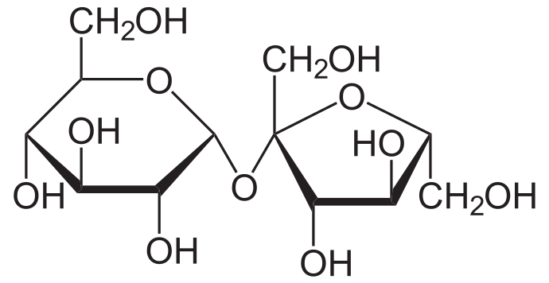
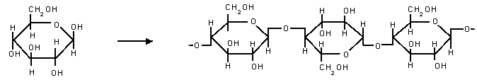
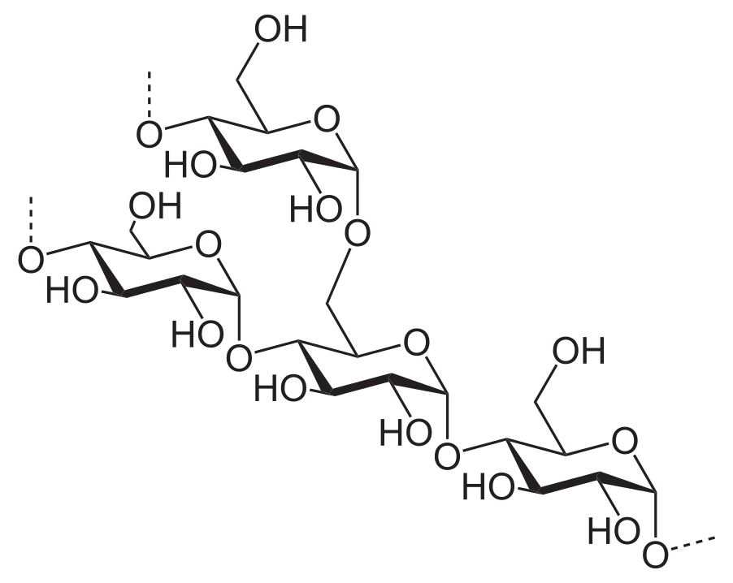

biomeleculas
carbohidratos
monosacaridos
son azucares los mas simples son monosacaridos
glucosa, fructuosa y galactosa son los mas comunes

disacaridos
disacaridos son las uniones de 2 monosacaridos unidos covalentemente la mas conocida es sucrosa
{kind=link}
polisacaridos
son 2 o mas monosacaridos unidos
tambien son utiles para almazenar grandes cantidades energia

celulosa
la estructura mas comun en las plantas, son un monton de glucosas unidas
{kind=link}
almidon
las plantas lo usan para almacenar energia que esta formado por 2 polimertos distintos de glucosa
{kind=link}
glucogeno
es la reserva de energia para los animales, es similar al almidon pero tiene mas ramas y es mas complicado en su forma
esta hecho de glucosa que fue comida, suele estar en los musculos y tambien en el higado
{kind=link}
lipidos
son carbohidratos mas simples y se agrupan juntos porque no se pueden disolver en agua ya que su union es nopolar son hecho de glicerol y acido graso
gliserol
{kind=link}
acido graso

saturados
son los acidos grasos que tienen todas sus uniones con el carbon tienen hidrogenos, no tienen dobles uniones de carbon
insaturados
sucede cuando en alguna parte tiene dobles uniones con el carbon o faltando hidrogeno las uniones dobles pueden dar isomería cis-trans
triglicerico
cuando 3 moleculas de acidos grasos se conectan a una de glicerol se optine un triglicerido
son comunes en mantenquilla, aceites o las partes blancas de la carne

Ejemplo de un triglicérido graso insaturado ( C 55 H 98 O 6 ). Parte izquierda: glicerol; parte derecha, de arriba abajo: ácido palmítico, ácido oleico, ácido alfa-linolénico.
fosfolipido
en un triglicerido uno de sus acidos grasos es remplazado por un fosfato
estos forman las paredes de las membranas celulares
{kind=link}
el fosfato les da la propiedad de ser polar ( atraidos al agua ) y los acidos grasos teniendo la propiedad de no-polares ( hidrofobico )
si un puñado de fosfolipidos se colocan en agua formaran la siguiente estructura
{kind=link}
la figura 1 es la forma de las membranas celulares
esteroides
son otro tipo de lipido con la caracteristica de tener 4 carbones interconectados
estradiol
hormona sexual femenina
{kind=link}
testosterona
hormona sexual masculina
{kind=link}
colesterol
es el esteroide mas fundamental que esta formado con fosfolipidos que ayudan a formar paredes celulares
{kind=link}
gonane
es el esteroide mas simple formado unicamente for el nucledo de un esteroide
{kind=link}
proteinas
las moleculas mas complejas estan formados por polimeros de aminoacidos
estan formados por un acido caboxilico y un amino unidos por un carbon con un hidrogeno y un radical
{kind=link}
polipeticos
son polimeros de aminoacidos formados por dos o mas
amino acidos
nombre |
symbolo |
alanina |
ala |
arginina |
arg |
asparagina |
asn |
acido aspartico |
asp |
cistina |
cys |
glutamina |
gln |
acido glutamico |
glu |
glicina |
gly |
histidina |
his |
isoleucina |
ile |
leucina |
leu |
lisina |
lys |
metionina |
met |
fenilalanina |
phe |
prolina |
pro |
serina |
ser |
treorina |
thr |
triptofano |
trp |
tirosina |
tyr |
valina |
val |